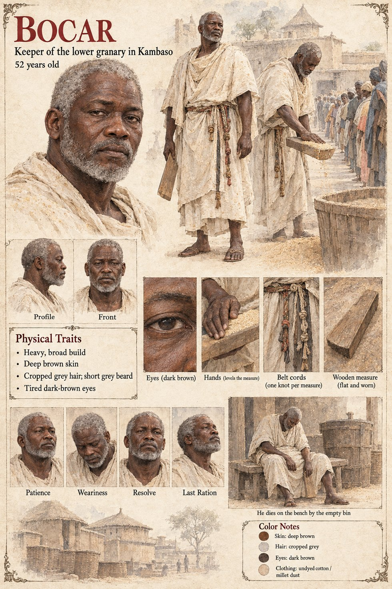

Bocar
Keeper of the lower granary in Kambaso · keeps his accounts in knotted cord · 52 years old
A heavy, methodical man of fifty-two, the keeper of the lower granary in Kambaso, who has measured out other people's millet for thirty years without once being accused of an undercount. The granary-keepers keep their accounts in knotted cord, one cord to a household, one knot to a measure, and he goes on knotting through the winter of the war long after there is anything in the bin to measure. By the first of Lorren the allowance is a bowl to a household, and by the twentieth a bowl to a street; he gives it out from the same wooden measure, level, with the flat of his hand, to eleven hundred people who stand in a line that bends twice around the granary wall and who do not, he notices, push.
He gives out the last of the millet on the third of Mavren. That night he ties the last knot on the cord for his own household, when his daughter, who is nine, stops asking whether the line is moving. On the fourth he sits down on the bench beside the empty bin with the full set of cords across his knees, as though to check a sum, and does not get up. He was not one of the dead the Recounters' verse counted, since he had not died in a field, and he was not one the captains' council counted, since it counted only what it could march. He was one of the thirty thousand. The Recounters' verse gives eleven thousand dead in the field; the granary-keepers' cords, which nobody ever gathered, would have given thirty thousand more by that winter, most of whom died at home.
The manuscript gives his age, build in one word, trade, measure and cords. The sheet's broad build, deep brown skin, cropped grey hair, short grey beard, tired dark-brown eyes and undyed cotton dusted with millet are its own, as are its belt cords, one knot per measure, and its worn wooden measure. Its panels are Patience, Weariness, Resolve and Last Ration, and its scene He dies on the bench by the empty bin; the manuscript says he sits and does not get up.
“He was one of the thirty thousand.”